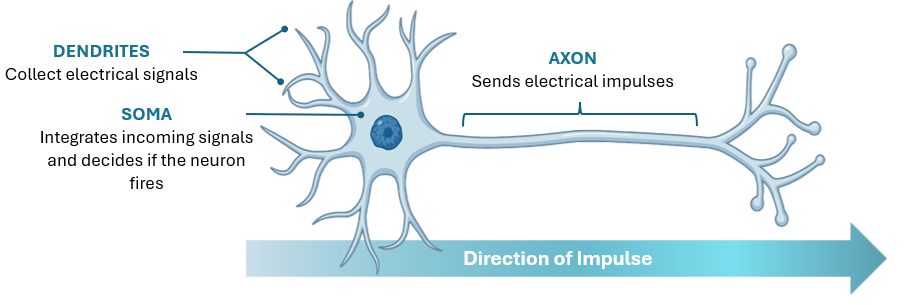
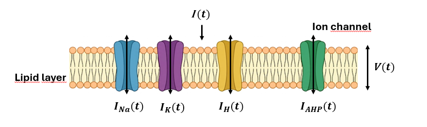
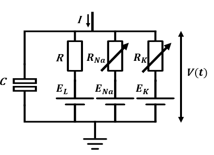
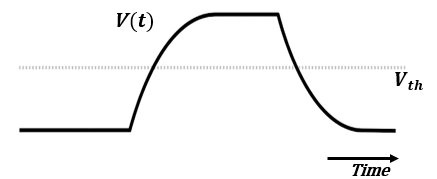

LIF Model#
What is a neuron?#
A neuron is a nervous system cell that receives and transmits electrical signals, while a motoneuron connects the nervous system to muscles and controls movement.

If we zoom in on the neuron, we see the cell membrane. This is a microscopic barrier of fat that separates the inside of the cell from the outside world. This barrier is crucial because it keeps electrically charged particles, called ions (like sodium and potassium), separated. This creates an electrical difference between the inside and outside of the cell. Embedded in this membrane are special proteins called ion channels. Think of them as tiny gates. Normally, they are closed, but when an electrical signal hits them, they can open or close, changing the electrical balance and starting the impulse.

Model#
This biological membrane can be represented as an equivalent electrical circuit comprising only the specific ion channels that drive action potential generation.

Membrane current equation (conductance-based model)
Where:
\(I(t)\) = total membrane current
\(C\) = membrane capacitance
\(V\) = membrane potential
\(g_{Na}\) = sodium conductance
\(E_{Na}\) = sodium reversal potential
\(g_{K}\) = potassium conductance
\(E_{K}\) = potassium reversal potential
\(g_{L}\) = leak conductance
\(E_{L}\) = leak reversal potential
LIF Model#
The Leaky Integrate-and-Fire (LIF) model abstracts the complexity of biological ion channels by representing the membrane as a system that accumulates electrical charge subject to a continuous leak. Upon reaching a critical voltage threshold, the model generates an action potential (spike) and instantly resets.

A biological neuron’s membrane acts like an RC circuit: a capacitance \(C\) that stores charge, and a leak conductance \(g_L\) that lets it dissipate. The voltage across the membrane evolves as:
Dividing both sides by \(g_L\) and defining \(\tau_m = C / g_L\) and \(R = 1 / g_L\), we get the standard form:
The reset rule#
The LIF neuron fires a spike whenever \(V\) reaches a threshold \(V_{th}\), and is immediately reset:
Exercises#
The exercises for this tutorial are in the notebook 0_lif_neuron_exercises.ipynb, available on GitHub.